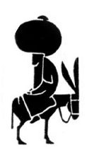

Toward a secret sky
“This is love: to fly toward a secret sky, to cause a hundred veils to fall each moment. First to let go of life. Finally, to take a step without feet.” – Rumi

No, this is not a hipster poetry blog. It is a blog about programming. You can find a list of posts in the archive.
| July 23, 2013 | I moved my blog |
| November 26, 2012 | Building a Haskell web app with Snap |
| July 25, 2012 | Keeping tallies in Python |
| July 19, 2012 | Watching a file system directory with inotify and Linux |
| July 6, 2012 | Calling the Google Drive API and other Google APIs asynchronously with Twisted |